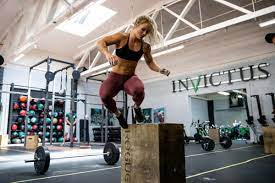
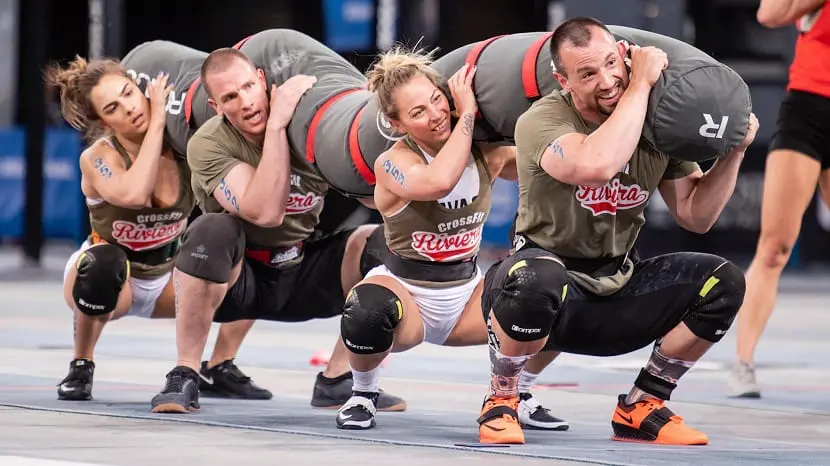
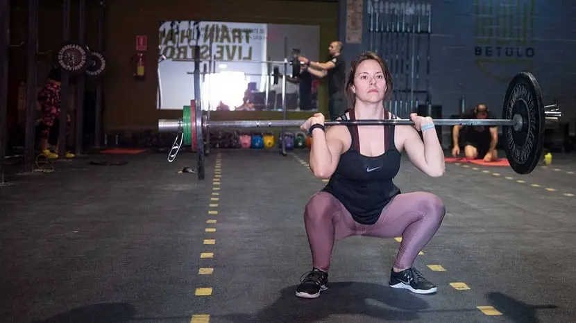
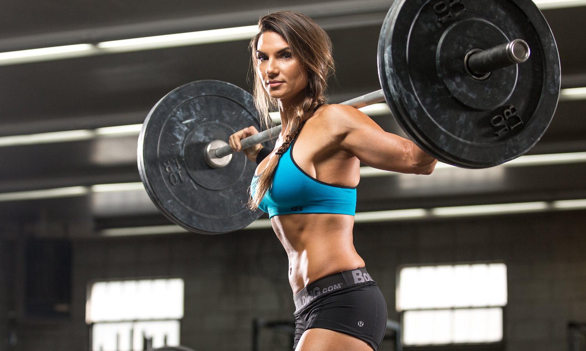
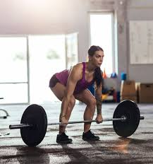
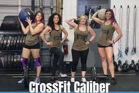

Історія винекнення
У 1996 році був організований перший спеціально призначений зал для кросфіту. Усього через 5 років, у 2001 році, він був запатентований компанією Кроссфит Inc. Засновником став тренер із гімнастики Грег Глассман. У наступні 15 років масова популярність методики у світі дала поштовх відкриттю понад 15000 спортивних організацій для цього виду спорту.
Сертифіковані інструктори самостійно створюють програми підготовки, способи навчання, також визначають план оцінювання у своїх фітнес-клубах. У 2010 році компанії Кроссфит та Reebok підписали угоду, на підставі якої друга просуває кросфіт у світовому масштабі, зокрема й Україну.
Він істотно відрізняється від звичайних кругових тренувань:
- Використовуються навантаження, орієнтовані на одночасний розвиток сили, витривалості та спритності. Тому кросфіт, в основному, ділять на гімнвагамиастику, кардіо та важку атлетику.
- Тренування найбільш функціональні. Базові вправи, наприклад ривки або біг, можна комбінувати, поєднуючи з веслуванням, спринтерськими забігами, роботою з вільними.
CrossFit як вид спорту високої інтенсивності.
Є люди, здатні бігти 60 хвилин поспіль і піднімати багато кілограмів в таких базових вправах, як жим лежачи. Ці люди у хорошому фізичному стані, але вони можуть набагато покращитися. Така дисципліна, як бодібілдинг або підняття тягарів у тренажерному залі, не призведе до витривалості, а лише до сили та гіпертрофії. З іншого боку, якщо ви тренуєтесь лише бігом, Ви також не збираєтеся генерувати адаптації на основі сили та збільшення м’язів.
Було показано, що втручаються в організм, коли ми виконуємо різні вправи залежно від мети, яку ми переслідуємо. Якщо наша мета повністю естетична, і ми хочемо набрати м’язову масу, нам слід зосередитись лише на вазі. Якщо ми постійно робимо довготривалі вправи на серцево-судинну систему, ці втручання негативно вплинуть на м’язові адаптації, необхідні для досягнення гіпертрофії. Також станеться навпаки, якщо ми хочемо бути високопродуктивними спортсменами, а наша дієта та тренування засновані на піднятті ваги, ми будемо компрометувати здобуття опору.
Цього можна уникнути, навчаючи CrossFit. Це дисципліна, в якій ви можете одночасно працювати та вдосконалювати витривалість та фізичну силу. І це те, що їхні вправи - це поєднання обох дисциплін, призначених для людей, які хочуть вдосконалити обидві. Можна сказати, що він діє як програма фізичної підготовки, в якій ми маємо функціональну підготовку руху, але розвивався з високою інтенсивністю.
Висока інтенсивність є ключем до подолання нашого застою та перевищення нас самих. Якщо ми завжди тренуємось однаково, з однаковими вагами і в один і той же час, ми не дамо організму можливості генерувати пристосування як з точки зору опору, так і сили.
^ Наверх ^Для чого це?
Багато людей досі погано знають, чим займаються у цьому виді спорту чи для чого вони потрібні. Будучи відносно новим, над ним ще можна над чим попрацювати та дізнатись. CrossFit - це одне з найповніших видів спорту у світі. Він працює дуже різноманітно, і, отже, одноманітна діяльність не робиться. Є кілька основних фізичних областей, над якими працюють у CrossFit.
Перше, що це спритність. Це те, що з віком і малорухливим способом життя втрачається. Люди можуть відновити та отримати більшу спритність завдяки тренуванням CrossFit. Інший аспект - це координація, рівновага та гнучкість. Ці три аспекти пов’язані між собою. Це навички, які ми втрачаємо з часом і старіючи, і які можна повернути або отримати в цих високоінтенсивних тренуваннях.
Найпоширенішими цілями для людей, які тренують CrossFit, є: набирати сили, сили, витривалості, точності, дихальної здатності, м’язової витривалості та швидкості. Працюючи всі ці можливості різноманітним та немонотонним чином, це забезпечує більший рівень дотримання всіх навчальних програм. Напевно, ви вже не раз чули, як хтось говорив, що тренування з обтяженнями в тренажерному залі дуже нудні та одноманітні. Можливо, це для когось, хто не захоплюється навчанням і хоче лише досягти естетичних цілей. Для цих людей CrossFit може бути хорошим варіантом.
^ Наверх ^Чи корисний CrossFit для набору м’язів?
Треба пам’ятати, що якщо ваша мета лише набирати м’язову масу, CrossFit не рекомендується. Процес набору м’язів дуже повільний і складний. Це вимагає низки адаптацій м’язової та нервової системи, які можуть бути ускладненими при тренуванні цього високоінтенсивного виду спорту. До того ж, коли ви хочете набрати м’язи, найзручніше - це адаптувати до нього свій раціон та тренування.
Щоб генерувати нові м’язи та збільшувати наші тканини, необхідно мати надлишок калорій. Це робиться за рахунок споживання більше калорій, ніж ми витрачаємо під час фізичної активності та щодня. Якщо у нас вибаглива робота, а крім цього, ми тренуємо CrossFit, крім того, що тренування не спрямовані на гіпертрофію, нам доведеться з’їсти стільки калорій, що з часом це не буде стійким.
Тому вам слід чітко визначити цілі, яких ви хочете досягти, коли починаєте місію. Якщо ви хочете отримати трохи всього, і ваша статура не є вашою основною метою, CrossFit - хороший варіант. Я не кажу, що CrossFit не досягає гарної статури, але він не є найбільш оптимальним. Насправді дуже часто можна спостерігати людей, які проходили фазу набору м’язів із обтяженнями у спортзалі, які починають кросфіт на етапі визначення. Вони роблять це, оскільки це дисципліна, де інтенсивність дуже висока і, отже, витрата калорій вище.
У цих випадках логіка надзвичайна. "Я збираюся робити високоінтенсивні тренування, де я також працюю над силою, витрачаю більше калорій і підтримую дефіцит калорій, який допомагає швидше втрачати жир". Це може здатися найкращим варіантом, але це не так. Тренування високої інтенсивності не дозволяють працювати з великими навантаженнями. Якщо м’яз не отримує стимулу підтримувати об’єм, подібний до того, що був, якщо у вас енергетичний дефіцит, найімовірніше, що ви в кінцевому підсумку втратите м’язову масу, отриману внаслідок втрати жиру, оскільки тіло не є зацікавлений мати щось, що коштує, щоб це зберегти.
Я сподіваюся, що за допомогою цих порад ви зможете дізнатись більше про CrossFit та про його характеристики.
^ Наверх ^Кросфіт для жінок: особливості тренувань.
Сьогодні обрати для себе напрямок в спорті до душі не складе труднощів. Аеробіка, пілатес, фітнес, йога, силовий тренінг, важка атлетика - кожен може знайти те, що буде зігрівати душу і допомагати в моделюванні тіла.
Останнім часом все більшої популярності набуває кросфіт. Що за програма така і в чому її сильні сторони? І головне - чи не зашкодять інтенсивні тренування жіночому організму? На всі ці питання відповімо в статті.
Кросфіт - чоловічий чи жіночий спорт?
Чоловічий брутальний спорт чи представницям прекрасної статі також можна долучитися? Що потрібно запам'ятати - в спорті немає розподілу на жіночі й чоловічі завдання. Головне - грамотно скласти тренувальну програму і правильно дозувати навантаження, починаючи з мінімальної відмітки та поступово рости в якості виконання і кількості повторів. Кросфіт - кругова система тренувань, що сприяє покращенню витривалості організму. Універсальність є однією з основних переваг. Тренувальна програма об'єднує завдання із легкої та важкої атлетики, функціонального тренінгу, гімнастики, вправи з силовими тренажерами, кардіо та інше.
Особливість програми в тому, що всі завдання повторюються по кругу, замикаючись в ланцюг. Такий підхід дозволяє включити в роботу максимальну кількість м'язових груп і ефективно їх пропрацювати. Інтенсивно тренуючись, ви витрачаєте велику кількість енергії, що призводить до швидкого спалювання жирових відкладень. Ви втрачаєте вагу, покращуєте рельєф тіла, отримуєте легкість від тренування, залишаєте в залі поганий настрій і втому. Приступити до занять можуть навіть ті, хто ніколи раніше не займався спортом. Головне - почати, а потім ви вже не зможете зупинитися.
Особливості кросфіт тренувань:
- Всі завдання повторюються циклами по колу, замикаючись в ланцюжок. Це дозволяє виконати максимальну кількість вправ за мінімальний проміжок часу.
- Одночасно розвиваються кілька якостей: сила, витривалість, спритність, координація і гнучкість.
- Програма відрізняється високою інтенсивністю з мінімальним відпочинком між підходами.
- Навантаження рівномірно розподіляється на все тіло. Жодна група м'язів не залишиться без роботи.
- Систематично тренуючись, ви отримуєте спортивне тіло без зайвого перекачування.
- Прискорюються метаболічні процеси. В результаті ви отримуєте міцну імунну систему, поліпшується стан шкіри, нормалізується сон.
- Навантаження ефективні в боротьбі з "апельсиновою кіркою" і розтяжками.
- Кругова система складається з базових завдань легкої та важкої атлетики, кардіопрограми, гімнастичних елементів. До них відносяться присідання, біг з перешкодами, віджимання, підтягування, стрибки, ривки, підняття ваги, підйоми на груди і т.д.
Показання та протипоказання
Якщо ви маєте сильне бажання спробувати для себе нові техніки, вам дозволяє фізичне загартування, ви повні сил і енергії - вперед до здорового міцного тіла. Важливо дотримуватися техніки, прислухатися до власного організму, щоб уникнути можливих травм і розтяжок в ході тренінгу.
Існують протипоказання, при яких не рекомендується тренуватися: порушення роботи опорно-рухового апарату, захворювання суглобів і серця, підвищений тиск. Кросфіт - надзвичайно активний вид спорту, тому, приступаючи до тренінгу, обов'язково проконсультуйтеся у лікаря.
Правильна техніка - всьому голова
- Перед початком тренувань рекомендується добре розім'ятися: нахили в сторони, присідання, можна згадати уроки фізкультури в школі та виконати пару вправ для розігріву мускулатури.
- Не забувайте, що кросфіт дає чимале навантаження на серце і серцево-судинну систему, тому важливо не перестаратися! Слідкуйте за технікою виконання, число підходів і темп збільшуйте поступово.
- Часто дівчата хочуть сформувати рельєфні м'язи в найкоротші терміни. Не стрибайте вище голови, щоб не нашкодити своєму організму. Не потрібно на перших заняттях намагатися підняти важку штангу - на все свій час. На початковому етапі рекомендується збільшити кількість повторів, що дозволить промальовувати красивий рельєф, поліпшити витривалість і координацію.
Як і де займатися? Як скласти тренувальну програму, щоб займатися на благо? Щодо місця проведення - тренуватися можна як в залі, так і вдома, можна поєднувати тренування. Важливо відпрацювати техніку, тому рекомендується перші заняття провести в залі під чітким керівництвом досвідченого тренера. До речі, він допоможе скласти індивідуальну програму саме для вас, враховуючи вашу фізичну витривалість і рівень підготовки.
Для облаштування домашнього спортзалу всі необхідні товари для кросфіту можна купити в Україні, відвідавши інтернет-магазин "Інтер Атлетика". У нас представлено великий вибір обладнання для ваших спортивних перемог.
^ Наверх ^